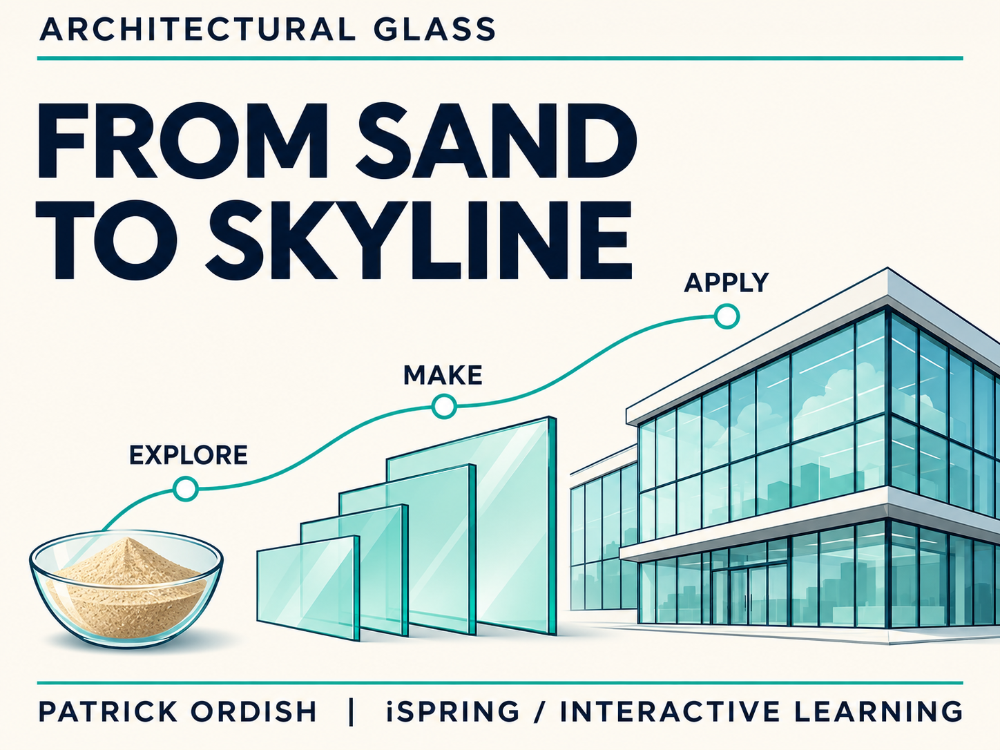

ARCHITECTURAL GLASS · INTERACTIVE LEARNING
From Sand
to Skyline
From ancient decorative beads to the glass buildings around us. Explore the story of architectural glass through an illustrated, twelve-chapter iSpring learning experience.

From technical content to an explorable story
I adapted an existing glass-manufacturing course into an independent portfolio sample, creating a clearer chapter structure, a restrained visual style and new AI-generated illustrations.
The learning journey connects origins and early production with float glass, finishing, enhancement, logistics and hot end glass.
Explore, compare and practise
- Native tabs, a timeline, flashcards and accordions.
- A labelled float-process diagram with three interactive markers.
- A custom HTML5 Glass Studio matching challenge with feedback.
- Ten self-check questions and a narrated welcome with a transcript.
- Branded chapter position graphics alongside iSpring’s live progress indicator.
Independent portfolio demonstration by Patrick Ordish. Illustrations are conceptual, not manufacturing instructions. The iSpring trial watermark is retained. The public web demo does not report results to an LMS. Self-checks are practice rather than a qualification. Glass Studio loads from this website and requires an internet connection.